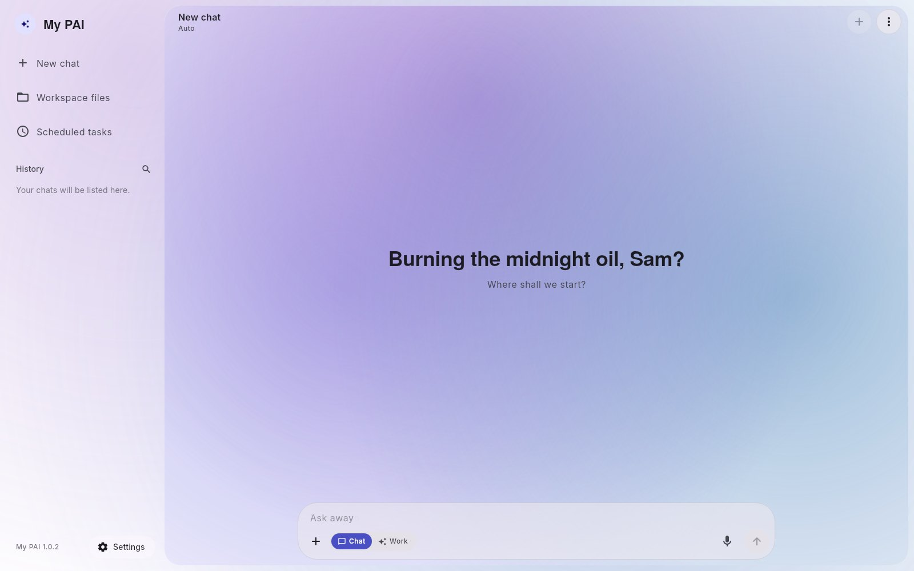
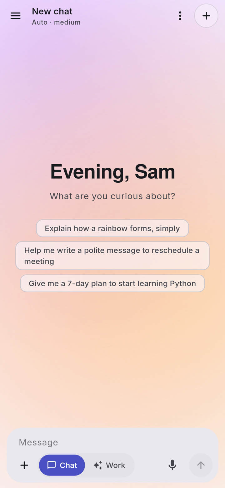

My PAI: chat, or hand over a piece of work. Your own keys, on every device.


MCP servers, approvals you can see through, undo, a shield, routines and your own devices working together.
Clear answers, with web search, images and PDFs.
It plans, writes files you can read as they grow, and asks before it changes anything.
Add tools from other services, then type @mcp in any chat. Every call asks you first.
See what a step will change before it runs. Allow it once or for the task. Undo a file change with one tap.
Text that tries to give the assistant orders is flagged, never obeyed. Every tool call is listed, with what it cost.
Chain steps into a task that runs on a schedule, or whenever you start it.
Claude, OpenAI, Gemini, Ollama and more. A backup model takes over when one fails. Offline mode keeps it all local.
Lend your computer's tools to your phone, share a setup with a code, or let other agents read My PAI. All off until you turn them on.
Android, Windows and Linux, in step through encrypted sync.
No account, no ads, no tracking. Everything stays on your devices.
Set a task once and let it run by itself.
MIT licence. Read it, build it, change it.